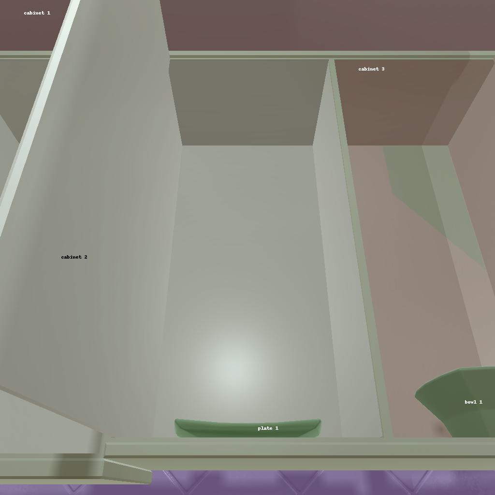

---------------------------------------------------------task: 21---------------------------------------------------------
--------------------------------------------------------------------------------------------------------------------------------------------------------------------
--------------------------------------------------------------------------------------------------------------------------------------------------------------------
Step:--------------------------------------------------------------------------14-------------------------------------------------------------------------------
----------------------------------------
VLM Prompt:
Image1:
Image2:
Image3:
**Instruction**
1. Analyze the provided image to identify all visible household objects, focusing on those relevant to the task description "heat some cup and put it in countertop."
2. Use the analysis of the image and the task hint "The agent must find an object of the desired type, pick it up, go to a microwave, heat the object with the microwave, then find the correct location to place it, and put it down there. The agent does not need to use the microwave button or open the microwave to heat the object, and the agent just needs to do action that is "heat the object with the microwave"." to answer the question: what is the most reasonable action in the choices for the task description "heat some cup and put it in countertop"?
4. Decide and write the answer using the template: The answer is: (i): , where i is the real number. If there is no desired object in the image, search every place based on **Initial Observation** to find the object. And if no one is exactly correct, choose a similar answer.
**Initial Observation**
You are in the middle of a room. Looking quickly around you, you can see cabinet (1-6), microwave (1), countertop (1-2), coffeemachine (1), toaster (1), sink (1), sinkbasin (1), fridge (1)
**Answer Choices**
(1): go to cabinet 3
(2): go to microwave 1
(3): go to cabinet 4
(4): go to cabinet 5
(5): go to cabinet 6
(6): go to countertop 1
(7): go to coffeemachine 1
(8): go to toaster 1
(9): go to countertop 2
(10): go to sink 1
(11): go to sinkbasin 1
(12): go to fridge 1
(13): open cabinet 1
(14): close cabinet 1
(15): take bowl 1 from cabinet 1
(16): take plate 1 from cabinet 1
(17): examine cabinet 1
**Answer**
Let's think step by step by following the instructions.
----------------------------------------
----------------------------------------
Original Response:
First, we need to identify a cup to heat, but in the provided image, there are no visible cups. There are only a plate and a bowl labeled as "plate 1" and "bowl 1" respectively, and they are not suitable for heating liquids like a cup would be. Since we are instructed to find a cup, we need to search every place based on the initial observation.
The initial observation mentions cabinets (1-6), which are typical places where cups are stored. Since cabinet 1 is already open and does not contain a cup, we can rule it out. The next logical step would be to look into the other cabinets.
Given the task description and the task hint, the most reasonable action from the choices provided would be to go to the next closest cabinet to search for a cup. Since we can't see the contents of cabinets 3, 4, 5, and 6 in the image, we must choose one of them to continue our search.
The answer is: (1): go to cabinet 3.
----------------------------------------
----------------------------------------
>>> Refine Original VLM Response and Get Pure Action: go to cabinet 3
----------------------------------------
-----------------------------------------------------------------
Running time: 9.612580299377441 seconds
Total Money: 13.628910000000005
-----------------------------------------------------------------
-----------------------------------------------------------------
Text Observation:You arrive at loc 2. The cabinet 3 is open. On the cabinet 3, you see a bowl 1, and a plate 1.
-----------------------------------------------------------------
UNSUCCEED